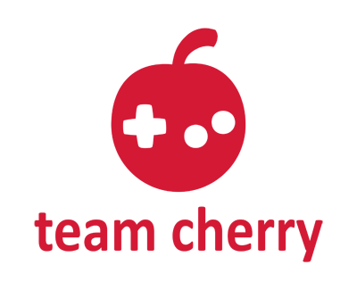

Team Cherry is an indie games developer in Adelaide, South Australia.
Our mission is to build crazy, exciting worlds for you to explore and conquer.
Team Cherry is an indie games developer in Adelaide, South Australia.
Our mission is to build crazy, exciting worlds for you to explore and conquer.

Forge your own path in Hollow Knight!
An epic action adventure through a vast ruined kingdom of insects and heroes.
Explore twisting caverns, battle tainted creatures and befriend bizarre bugs,
all in a classic, hand-drawn 2D style.
Discover a vast, haunted kingdom in
Hollow Knight: Silksong! The sequel to the award winning action-adventure.
Explore, fight and survive as you ascend to the peak of a land
ruled by silk and song.